Programmation orientée système
Programmation orientée systèmeW1-Introduction Données modifiables / non modifiable Les opérateurs W2-Boucles et structures de contrôleW3- Types avancés , tableaux et structs :Modificateur de type EnumTableaux Alias de types : typedefsStructs W4- Entrées sorties Printf scanf Fichiers Fichiers binaires :W5-Pointeursconst pointeursW6-Allocation dynamique malloc et calloc Tableau dynamique W7- Chaines de caractères , pointeurs de fonctions et Casting Chaines de caractères Pointeurs de fonctions Casting de pointeur W8- Rappel char* et Copie profonde Rappel char* Copies W9- Pointeurs et tableaux : Arithmetique de pointeurs Mise en garde sur sizeof Flexible array memberW10-Compilation Précompilation et define Autre
W1-Introduction
**Les principaux types élémentaires définis en C sont : int,doubleet char.
Remarque : en C, il n'y a pas de type « chaîne de caractères » (string). En C89 il n'y a pas de booléen. (depuis C99 : type bool dans stdbool.h)
⚠️Attention en C il faut toujours initialiser ses variables. Elle ne sont pas initialisée automatiquement comme en Java mais elle peuvent ( ne doivent pas ) être utilisée sans initialisation.
Données modifiables / non modifiable
Par défaut, les variables en C sont modifiables.
En déclarant une variable const, on dit que donnée ne pourra pas être modifiée via ce nom de variable.
⚠️Attention: cela n'assure pas l'invariabilité de la zone mémoire elle même car on peut modifier la mémoire directement.
xxxxxxxxxxint const a = 2 ; /*code qui modifie la zone mémoire de a à 3 */printf("%d",a) // affiche 3
Les opérateurs
L'opérateur =

en Java, oui . En C,non.
En C, l'opérateur = modifie le contenu de son premier opérande (à gauche) : sémantique de valeur
⚠️ L'opérateur de division entière vs régulière : 5/2 = 2 et 5.0/2 = 2.5
Quelques particularités de C :
**Toutes les expressions font quelque chose et retournent quelque chose.
N'importe quel expression a une valeur logique ( toute value qui n'est pas
0est considéréetrue)
Conséquences:
**La différence entre
x++et++x:

En C, la seule différence a donc lieu si l'on utilise la valeur de ces expressions... ...ce qui est fortement déconseillé !
x = 3: affecte la valeur 3 à la variable x (et donc modifie cette dernière)****
x == 3: teste la valeur de la variable x, renvoievraisi elle vaut 3 etfauxsinon (et donc ne modifie pas la valeur de x)Cependant
if (x = 3)est tout à fait accepté par le compilateur. ⚠️
L'évaluation paresseuse:
Les opérateurs logiques && et || effectuent une évaluation "paresseuse" :
L'évaluation des arguments se fait de la gauche vers la droite et seuls les arguments strictement nécessaires à la détermination de la valeur logique sont évalués.
exemple : (x != 0.0) && (3.0/x > 12.0) , le second terme n'est pas évalué si x non nul.
W2-Boucles et structures de contrôle
Eviter les variables globales.
En C (contrairement à Java) Un sous-bloc peut redéfinir une variable de même nom. Elle a pour portée ce bloc et masque la variable du bloc contenant.
exemple ( à éviter )
xxxxxxxxxxint const MAX = 5;int main(void) {int i = 120;{ int i = 1;for (; i < MAX; ++i) {printf("%d ", i);}}printf("%d\n", i);return 0;}// 1,2,3,4
Conseil : utilisez toujours la syntaxe avec des blocs, même si vous n'avez qu'une seule instruction.
xxxxxxxxxxif (fabs(x) > EPSILON) { // if (x != 0.0) à la précision EPSILONprintf("%f\n", 1.0/x);}else {puts("erreur : x est nul.");}- x
while (condition)Instructions //soit un bloc , soit une expression qui se finit avec ;doInstructions // soit un bloc , soit une expression qui se finit avec ;while (condition); //PRIVILIGIER LES BLOCS L'utilisation de
breaketcontinueest découragée.xxxxxxxxxxwhile (1) { do {Instruction 1; instruction 1;/* ... */ /* ... */if (condition d arrêt) ==> }break; while (!condition d arret);} autres instructions;autres instructions;xxxxxxxxxxint i;...i = 0;while (i < 100) {++i;if ((i % 2) == 0) continue;/* la suite n'est exécutée que pour les entiers ... */Instructions;...}suite; // i = 100// devientint i = 1 ;for( i = 1; i < 100 ; i+=2 ){Instructions;}suites; // probleme ici i = 101// probleme, si suite utilise i// solution i-- ou i = 100 ( i-- mieux)Conseil : Ne jamais faire de copier/coller en programmant.
rend la mise à jour de ce programme plus difficile : reporter chaque modification de P dans chacune des copies de P
réduit fortement la compréhension du programme résultant
augmente inutilement la taille du programme(
i = 100au dessus est du copier collé )
Prototypage :
Le prototypage est la déclaration de la fonction sans en définir le corps.
xxxxxxxxxxdouble moyenne(double x, double y);double moyenne (double,double); // possible mais déconseilléUne fonction ne peut être appelée que si elle prototypée où déclarée( la déclaration compte comme prototype ).
Le prototypage sera utile quand on a un projet à plusieurs fichiers.*
Fonction sans arguments : Il faut mettre
voidau lieu des arguments.xxxxxxxxxxint saisie_entier(void) {int i;printf("entrez un entier: ");scanf("%d", &i);return i;}Type f();n'est pas accepté en C : "deprecated feature"Passage par valeurs vs Passage par référence
Les passage d'arguments est fait toujours par valeurs.
Le passage par référence est simulé en passant la valeur du pointeur :
xxxxxxxxxxvoid f(int* x) { // passage par « référence »*x = *x + 1;printf("x=%d", *x);}int main(void) {int val = 1;f(&val);printf(" val=%d\n", val);return 0;}Pas de surcharge en C :
On ne peut pas définir deux fonctions avec le même nom mais avec des listes d'arguments différents . Si on veut une fonction qui affiche des int ou des double , en doit les nommer différemment :
display_intetdisplay_double
W3- Types avancés , tableaux et structs :
Modificateur de type
pour
intetdoubleon peut ajouterlongpour avoir un plus grand nombre de bits :long int n;a plus de bits queint.On peut avoir moins de bits pour les
intavecshort int n;pour
intetcharon peut utiliserunsigned int n;pour travailler avec des positifs ;
En C, la taille des types n'est pas spécifiée ( on ne sait pas combien de bit a le type intpar exemple) dans la norme.
Seules indications :
le plus petit type est char
les inégalités suivantes sont toujours vérifiées sur les tailles mémoires :
char ≤ short int ≤ int ≤ long intdouble ≤ long double
Pour spécifier la taille :
int8_t,uint8_t, ...,int64_t,uint64_t(définis dansstdint.h)Bornes :

Piège arithmétique :
Ce code contient une faille , où est-elle ?
xxxxxxxxxxint index = demander_nombre();if (index < 0){ index = -index; }if (index >= MAX) { index = MAX-1;}utilisation(tableau[index]);Il ne marque pas pour INT_MIN car -INT_MIN = INT_MINet donc on va essayer accéder à un indice négatif. ( cela a un rapport avec la représentation en Complément à deux).
Pour la même raison abs(x)<0 est possible.
Quels sont les int x tel que x == -x?0 ET INT_MIN ou l'équivalent pour d'autres types(LONG_MIN).
Enum
**enum Type { valeur1, valeur2, ... }; par exemple :
xxxxxxxxxxenum CantonRomand { Vaud, Valais, Geneve, Neuchatel, Fribourg, Jura };On peut les utiliser avec switch :
xxxxxxxxxxenum CantonRomand moncanton = Vaud;...moncanton = Valais;...switch (moncanton) { case Valais: ... ; break; case Vaud: ... ; break;}On peut même les utiliser comme entiers, sachant que la convention utilisée est que la première valeur énumérée (Vaud dans l'exemple précédent) correspond à 0.On pourrait alors par exemple faire :
xxxxxxxxxxint const NB_CANTONS_ROMANDS = Jura+1;ou encorefor (i = Vaud; i <= Jura; ++i) ...ou alors population[moncanton] = 616;Tableaux
**Différent des tableaux de Java. En C les tableaux à taille variable n'existent pas.
Déclaration : type identificateur[taille]; ex : int age[5]; (il ne faut pas utiliser les magic numbers comme ici 5)
Les VLA : variable length array
Le code suivant n'est pas un tableau statique mais une VLA , la taille du tableau ne change pas, mais elle n'est pas connue à la compilation.
xxxxxxxxxxsize_t const NB_CANTONS = 26; // pas conne à la compilateur // on aussi faire scanf("%d",NB_CANTONS); double superficie[NB_CANTONS];⚠️ le nom VLA est trompeur car la taille reste fixe.
xxxxxxxxxx// C'est une macro : connue à la compilation double superficie[NB_CANTONS]; Syntaxe :
xxxxxxxxxxint age[5] = { 20, 35, 26, 38, 22 };int age[] = { 20, 35, 26, 38, 22 }; // DEUX INTIALISATIONS EQUIVALENTES
int age[BIG_N] = { 0 }; // TOUT LE TABLEAU INITIALISE à 0 Syntaxe avancée :
Depuis C99, on peut initialiser partiellement un tableau avec la syntaxe :{ [n] = val1, ... , valq }
Note : le reste du tableau reste initialisé à 0.**
Par exemple :
xxxxxxxxxxdouble tablo[N] = { [2] = 0.5 }; // 0.0, 0.0, 0.5, 0.0, ...
int tab[MAX] = {1, 2, 3, 4, 5,// commence par faire : tab[0]=1, tab[1]=2, ...[MAX-5] = 9, 8, 7, 6// puis : tab[MAX-5] = 9, tab[MAX-4] = 8, ...// le reste est initialisé à 0};// Pour MAX= 6, tab contient 1, 9, 8, 7, 6, 0Remarques :
⚠️ ⚠️ Il n'y a pas de vérification de débordement sur les indices du tableau.
Un tableau n'a pas connaissance de la taille , il faut toujours l'enregistrer , la passer aux fonctions ...
xxxxxxxxxxint f(double tableau[], size_t const taille);Toutes les déclarations suivantes sont équivalent et ne passent pas la taille du tableau :
xxxxxxxxxxint f(double tableau[TAILLE]);int f(double tableau[]);int f(double* tableau);⚠️Attention ! Le passage d'un tableau à une fonction se fait toujours par référence , bien que ce ne soit pas explicitement marqué par le signe &.
Si on ne veut pas une telle modification, on ajoute const à la déclaration.
xxxxxxxxxxint f(const double tableau[], size_t const taille){ // ci on essaye de modifier tableau ici , une erreure se produit. }Alias de types : typedefs
définir un nouveau nom de type : typedef type alias;. ça permet de clarifier les types:
xxxxxxxxxxtypedef double Vecteur[N]; // comme une déclaration de variable double tableau[N] // et remplacer le nom de variable par le nouveau nom // tableau => vector on a alors : double Vecteur[N]double produit_scalaire(Vecteur a, Vecteur b);Les utilisations typedef est encouragée pour éclaircir les concepts dans le code.
Structs
une struct est une sorte d'objet avec des attribut publiques et sans fonctions.
xxxxxxxxxxstruct Nom_du_type { type1 identificateur1 ; type2 identificateur2 ; ...};// example
xxxxxxxxxxstruct Personne { char nom[TAILLE_MAX_NOM]; double taille; int age; char sexe;};
struct Personne untel; // la déclaration : struct type nom_de_la_variable
// MIEUX : utiliser typedef : pour éviter de déclarer avec structtypedef struct{ char nom[TAILLE_MAX_NOM]; double taille; int age; char sexe;} Personne;// puis Personne untel;// pour initialiser Personne untel = { "Dupontel", 1.75, 20, 'M' };// acces au champ de la struct untel.taille = 1.75;// si la struct est passée par réference ( pointeur ) on utilise -> au lieu de . void anniversaire(Personne* p) { ++(p->age); // un an de plus ! on peux aussi paire (*p).age}
Affectation de struct
xxxxxxxxxxPersonne p1 = { "Durand", 1.75, 20, 'M' };Personne p2;p2 = p1;// équivalent à p2.nom=p1.nom; p2.taille=p1.taille; p2.age=p1.age; p2.sexe=p1.sexe;⚠️ le seul opérateur global est = (affectation) , == n'existe pas , il faut faire soit même une fonction qui compare tout.
union
xxxxxxxxxxtypedef union { int i; double d;} Int_or_Double;
Int_or_Double x; // x a un attribut i , OU .d mais les deuxx.i = 3; // x.d a été modifié ici ...x.d = 9.87;// x.i atW4- Entrées sorties
Printf
int printf("FORMAT", expr1, expr2, ...)
Important : printf retourne le nombre de caractères écrits ou une valeur négative en cas d'échec.
Tous les caractères ordinaires (sauf ’%’) sont recopiés tels quels
’%’ introduit une conversion de valeur spécifiée par 1 caractère entre le ’%’ et le caractère de spécification de conversion peuvent apparaître
’-’ : ajustement à gauche dans le champ
’+’ : toujours afficher le signe (nombres)
’ ’ : met un espace si le premier caractère n’est pas un signe (en clair : pour les nombre positifs, et sans l’option +)
’#’ : indicateur explicite de format : ajoute un 0 devant les nombres en octal, un 0x ou 0X devant les nombres en hexadécimal, un point systématique pour les double.
’0’ : compléter le champ par des 0 non significatifs
des nombres : taille minimale du champ ’*’ : taille du champ donné par une variable supplémentaire
’.’ suivit d’un nombre ou de ’*’ : la « précision »
un indicateur de taille de l'objet : h pour short, l pour long et L pour long double.
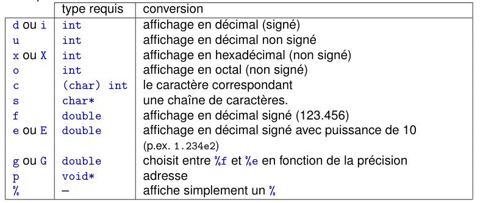
xxxxxxxxxxdouble x = 10.4276;double y = 123.456789;double z = 4.0;char nom[] = "ABCDEFGH";// 5 ici c'est le nombre minimal de caractères. .2 : deux nombres après la virgules. printf(">%5.2f%%<\n",x); // >10.43%<
printf(">%7.2f%%<\n",x); // > 10.43%< , remarquer les dex espaces, c'est à case du 7 printf(">%3.2f%%<\n\n", x); // >10.43%< (le « .2 » est prioritaire sur le « 3 »)
printf("XX%5.4sXX\n",nom); // XX ABCDXX (4 caractères au maximum affichés sur 5 « places »)
printf("XX%+12.4fXX\n",y); // XX+123.4568XX , pour forcer l'affichage du signe , mettre + printf("XX%+012.4fXX\n",y); // XX+000123.4568XX , +quelque chose , ajoute quelquechose au lieu des espace pour padder printf("XX%012.4fXX\n",y); // XX0000123.4568XXprintf("XX%-+12.4fXX\n",y); // XX+123.4568XX , ajuste à gauche printf("%.2f\n",z); // 4.00printf("%.2g\n",z); // 4 , %g se rend compte que c'est un int , il s'adape printf("%#.2g\n", z); // 4.0 , pas besoin de print 4.00 , %g s'adapte
⚠️printf n'affiche pas toujours quelque chose! En fait printf envoie ses messages dans un tampon (buffer).
Pour forcer l'affichage fflush(stdout)
scanf
int scanf("FORMAT", pointeur1, pointeur2, ...)
Retourne 1 si la lecture s'est faite sans erreur.
Remarque : Lorsque plusieurs valeurs sont lues à la suite, le caractère séparateur de ces valeurs est le blanc ( le blanc est ce que isspaceaccepte)
scanf("%[A-Z]", chaine);Lire que des majusculesscanf("%[ˆ\n]", chaine)Lire tout sauf ce qui suis ^ , donc ici tout sauf les retours à la ligne.scanf(" %[ˆ\n]", chaine)Lire tout sauf blancs initiaux et retours à la ligne.différence avec printf lire un double avec
%lfscanf("%d%*d%lf", &i, &x)saute un champ, ex :3 4 5alors 5 dans x et 3 dans i.
xxxxxxxxxxdo { printf("Entrez un nombre entre 1 et 10 : "); fflush(stdout); scanf("%d", &i);} while ((i < 1) || (i > 10)); // si on rentre a => boucle infinie
// solution : do { printf("Entrez un nombre entre 1 et 10 : "); fflush(stdout); j = scanf("%d", &i); if (j != 1) { printf("Je vous ai demandé un nombre, pas du charabia !\n"); // cette ligne vide le tampon , lire tant qu'on a pas atteint la fin de stdin ou qu'il ny'a pas d'erreur sur stdin while (!feof(stdin) && !ferror(stdin) && getc(stdin) != '\n'); }} while (!feof(stdin) && !ferror(stdin) && ((j!=1) || (i<1) || (i>10)));stderr est un flot fait pour afficher les erreurs. Il faut l'utiliser pour les messages d'erreurs.
Mais comment ?
Fichiers
Pour ouvrir un flot :
xxxxxxxxxxFILE* entree = NULL;char nom_entree[FILENAME_MAX+1];...entree = fopen(nom_entree, "r"); // en mode lecture : READDans le cas des fichiers textes (fichiers lisibles par les humains), les « modes » d'ouverture possibles sont :
r en lecture
w en écriture (écrasement)
a en écriture (à la fin)
b pour manipuler des fichers binaires
On peut combiner :
fichier3 = fopen(nom3, "a+b")
En cas d'erreur d'ouverture, la fonction fopen retourne la valeur NULL.
xxxxxxxxxxentree = fopen(...);if (entree == NULL) {/* gestion de l'erreur */} else {/* suite (avec un fichier entree valide) */}On peut utiliser le flot ouvert avec fprintf , fscanf.
xxxxxxxxxxFILE* entree = NULL;FILE* sortie = NULL;// ouvrir ici ... /* lit un entier dans le fichier "entree" */fscanf(entree, "%d", &i);/* et l'écrit dans le fichier "sortie" */fprintf(sortie, "%d\n", i);Toujours vérifier la fin de ficher et l'erreur: while ( !feof(entree) && !ferror(entree) )
⚠️ NE PAS oublier de fermer tout fichier ouvert! on fait : fclose(FILE*)
Fichiers binaires :
Il faut pour cela :
ouvrir le fichier pour une écriture en binaire sortie =
fopen(nom_fichier, "wb");utiliser la commande
fwriteau lieu defprintf:size_t fwrite(const void* ptr, size_t taille_el,size_t nb_el, FILE* fichier);fwriteécrit dans le fichier fichier,nb_el éléments, chacun de tailletaille_el, stockés en mémoire à la position pointée parptr.fwriteretourne le nombre d'éléments effectivement écrits.
Regarder les slides(4) pour des exemples typiques le lecture / écriture.
Repositionner la tête de lecture: fseek , ftell , rewind, ferror et clearerr
W5-Pointeurs
Pourquoi les pointeurs ?
à permettre un partage d'objet sans copies entre divers bouts de code.
☞ Reference
Pour ne pas faire de copies de
structpar exempleà pouvoir choisir des éléments non connus a priori ☞généricité :
exemple : Choisir une fonction :
xxxxxxxxxxtypedef double (*Fonction)(double);double integre(Fonction f, double a, double b) { ... }integre(f1, a, b) //integre(&f1, a, b) // ces deux lignes équivalentesà pouvoir manipuler des objets dont la durée de vie (≃ portée dynamique) dépasse les blocs dans lesquels ils sont déclarés (portée, au sens syntaxique) ☞ allocation dynamique
Qu'est-ce qu'un pointeur ?
Le pointeur sur une variable est l'adresse de l'emplacement mémoire qui contient sa valeur.
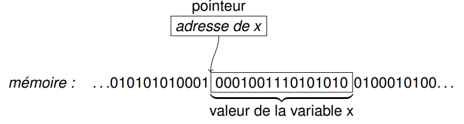
Comprendre les pointeurs
Un pointeur c'est comme la page d'un carnet d'adresse
déclarer un pointeur : ajouter une page dans le carnet (mais cela ne veut pas dire qu'il y a une adresse écrite dessus ! )
xxxxxxxxxxint* ptr = &i;int* ptr = NULL; /* ne pointe NULLe part */allouer un pointeur p : aller construire une maison quelque part et noter son adresse sur la page p (mais p n'est pas la maison, c'est juste la page qui contient l’adresse de cette maison !)
const pointeurs
type const* ptr; (ou const type* ptr) déclare un pointeur sur un objet constant de type type :
modification de la valeur au travers de
ptr: pas possible.faire pointer
ptrvers un autre objet : possible
type* const ptr = &obj; déclare un pointeur constant sur un objet obj de type type :
Faire pointer
ptrvers autre chose : pas possibleModifier la valeur de
objau travers deptr: possiblePour résumer :
consts'applique toujours au type directement précédent, sauf si il est au début, auquel cas il s'applique au type directement suivant.
W6-Allocation dynamique
Il y'a 2 façons de déclarer des variables :
déclarer des variables.
allouer dynamiquement de la mémoire pendant l'exécution d'un programme.

Les variables sont stockés dans la pile (stack) : que quelques Mo.
Tout ce qui est alloué dynamiquement est dans le tas.
malloc et calloc
malloc
pointeur = malloc(taille);réserve une zone mémoire de taille
tailleet met l'adresse correspondante danspointeur.Pour aider à spécifier la taille , on peut utiliser :
sizeofcalloc
pointeur = calloc(size_t nb_elements, size_t taille_element)allouer de la mémoire consécutive pour plusieurs variables de même type (typiquement un tableau, dynamique), on préfèrera
callocàvoid* calloc(size_t nb_elements, size_t taille_element);Par exemple pour allouer de la place pour 3 double consécutifs :
pointeur = calloc(3, sizeof(double));Différences entre
callocetmallocPréférer toujours
callocàp = malloc(n * sizeof(Type))⚠️
p = malloc(n * sizeof(Type))peut engendrer un overflow sur la multiplicationcalloc
initialise à 0 (le contenu de) la zone allouée contrairement àmalloc`toujours initialiser quand on utilise
mallocOn peut utiliser
memset(ptr, 255, sizeof(*ptr));
free(pointeur): libère la zone mémoire pour qu'elle puisse être utilisée pour autre chose .Mais le pointeur pointe toujours vers cette zone mémoire ,⚠️ il ne faut pas utiliser ce pointeur : pour cela :
Un
free(pointeur)doit toujours être précédé parpointeur = NULL
Règle absolue : Toute zone mémoire allouée par un
[cm]allocdoit impérativement être libérée par unfreecorrespondant !
Vérification d'une Allocation correcte
Les fonctions malloc et calloc retournent NULL si l'allocation n'a pas pu avoir lieu.
xxxxxxxxxxpointeur = calloc(nombre, sizeof(type));if (pointeur == NULL) {/* ... gestion de l’erreur ... *//* ... et sortie (return code d’erreur) */}/* suite normale */
Tableau dynamique
xxxxxxxxxxvector* vector_construct(vector* v) {if (v != NULL) { vector result = { 0, 0, NULL }; result.content = calloc(VECTOR_PADDING, sizeof(type_el)); if (result.content != NULL) { result.allocated = VECTOR_PADDING; } else { // retourne NULL si on n'a pas pu allouer la mémoire nécessaire return NULL; } // écriture atomique *v = result;}return v }⚠️ OFFRIR UNE FONCTION POUR free
xxxxxxxxxxvoid vector_delete(vector* v) { if ((v != NULL) && (v->content != NULL)) { free(v->content); v->content = NULL; v->size = 0; v->allocated = 0; }}
Utilisation de realloc pour agrandir le tableau ⚠️ ne jamais faireptr = realloc(ptr,...)
xxxxxxxxxxvector* vector_enlarge(vector* v) {if (v != NULL) { vector result = *v; result.allocated += VECTOR_PADDING; if ((result.allocated > SIZE_MAX / sizeof(type_el)) || ((result.content = realloc(result.content,result.allocated * izeof(type_el))) == NULL)) { return NULL; /* retourne NULL en cas d'échec ; * v n'a pas été modifié. */ } // affectation finale, tout d'un coup *v = result; // SI IL Y'A UNE ERROR v RESTE INTACT } return v;}⚠️(result.allocated > SIZE_MAX / sizeof(type_el)) et pas
(result.allocated * sizeof(type_el)> SIZE_MAX) ce dernier peut OVERFLOW
W7- Chaines de caractères , pointeurs de fonctions et Casting
Chaines de caractères
Déclaration :
par une variable de taille fixe (tableau) (allocation statique) :
xxxxxxxxxxchar nom[25]; char nom_fichier[FILENAME_MAX]; char const welcome[] = "Bonjour"; par une allocation dynamique (pointeur) :
char* nom;Ici il ne faut pas oublier d'allouer n+1 caractères si on veut représenter n caractères.
Le n+1-ème est le caractère
'\0'noter qu'on initialisant le tableau à0on a déjà que le dernier élément est'\0'('\0'=(char)0)
xxxxxxxxxx👍 char s[] = "Bonjour";⚠️ char* s = "bonjour"; // on veut mettre une const(droite) dans une chaine non const(gauche)// La bonne manière de faire : char* s = calloc(TAILLE+1, 1); // + 1 pour le caractère '\0'strncpy(s, "bonjour", TAILLE);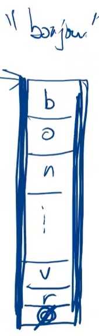
"bonjour" est une chaine de caractères constante stockée dans mémoire du compilateurs.
Si on veut vraiment que notre chaine s ne change pas on peut faire
const char* s = "bonjour";
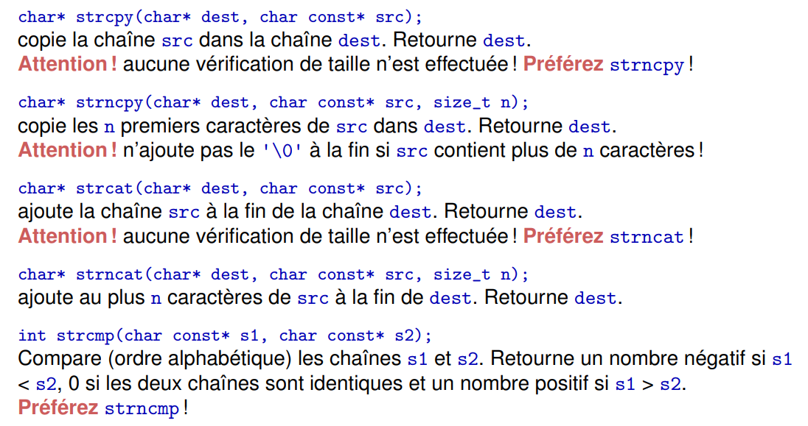
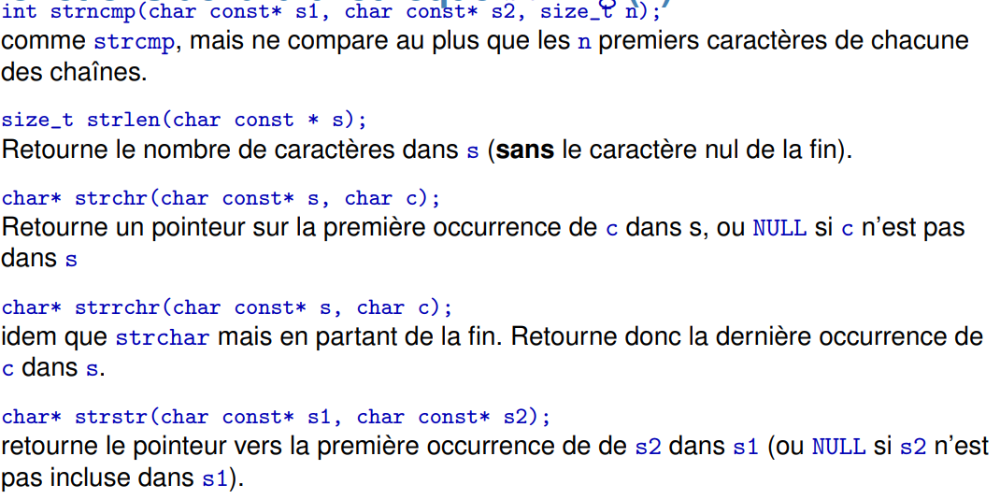
Pointeurs de fonctions
Une fonction a aussi une adresse mémoire (là ou sont ses instruction)
La syntaxe consiste à mettre (*ptr) à la place du nom de la fonction.
double f(int i); f est une fonction qui prend un int en argument et retourne un int.
double (*g)(int i); g est un pointeur sur une fonction du même type que ci-dessus.
mais f est en même temps un pointeur sur la fonction donc on peut écrire g=f ou g = &f.
De la même manière , on peut écrire z = g(i) ou z = (*g)(i)
Passer des fonctions en arguments
xxxxxxxxxxtypedef double (*Fonction)(double);...double integre(Fonction f, double a, double b) { ... }...aire = integre(sin, 0.0, M_PI);Arguments génériques
On veut une fonction qui peut trier n'importe quel liste d'éléments. void* pointe à une zone mémoire qui pe``ut contenir n'importe quoi.
int(*compar)(const void*, const void*) is a function that takes as a parameter two pointers and returns an int.
xxxxxxxxxxvoid qsort(void* base, size_t nb_el, size_t size, int(*compar)(const void*, const void*));// one example of such compar int compare_int(void const * arg1, void const * arg2) { int const * const i = arg1; int const * const j = arg2; return ((*i == *j) ? 0 : ((*i < *j) ? -1 : 1)) ;}...int tab[NB];...qsort(tab, NB, sizeof(int), compare_int);Casting de pointeur
casting normal
xxxxxxxxxxdouble x = 5.4;int i = (int) x; /* i = 5 */casting de pointeurs
xxxxxxxxxxdouble x = 5.4;int* i = (int*) &x; // on veut que le pointeur sur double devienne pointeur sur intprintf("%d\n", (int) x); /* affiche 5 */printf("%d\n", *i); /* affiche -1717986918 */ // c'est 5.4 éxprimé en int.
Attention ⚠️ ! Dans le cas de pointeur, cela ne change pas le contenu de la zone/variable en question, mais uniquement son interprétation.

une autre solution pour qsort :
xxxxxxxxxxPersonne montab[TAILLE];...int compare_personnes(Personne const* p_quidam1,Personne const* p_quidam2);...qsort((montab, TAILLE, sizeof(Personne), (int (*)(void const*, void const*))compare_personnes);// on cast W8- Rappel char* et Copie profonde
Rappel char*
xxxxxxxxxx
typedef struct {char* nom;int age; // unsigned serait mieux...} Personne;
int main(void){ Personne pierre = { "Pierre", 12 };/* (1): faute : devrait au moins etre const ! */ strncpy(pierre.nom, "Gustave", 7); /* SEGV : (2)*/ pierre.nom = "Gustave"; /* (3) : pas mieux que (2) ! }
Illustration de (2)
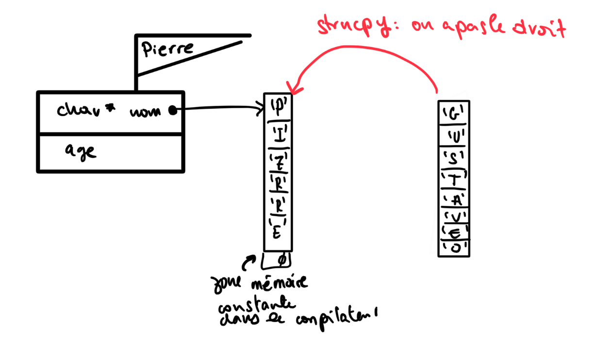
Illustration de (3)
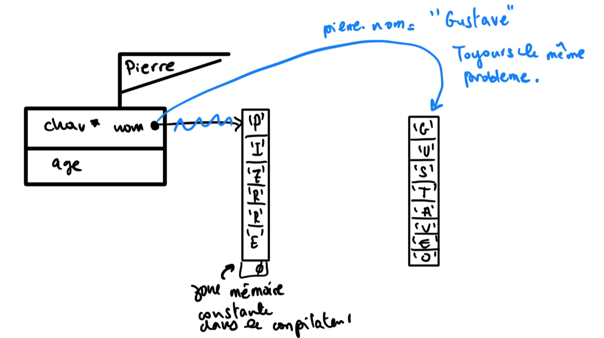
Récap:
Soit on choisit que les noms ne change pas et on écrit
xxxxxxxxxxconst char* nom;auquel cas on a droit à la syntaxe :
xxxxxxxxxxPersonne pierre = { "Pierre", 12 };pierre.nom = "Pierre";Soit on choisit que les noms peuvent changer et on écrit
xxxxxxxxxxchar* nom;auquel cas on doit utiliser
xxxxxxxxxxstrncpy(pierre.nom, "Eugène", MAX_NOM);
Solution :
xxxxxxxxxx // bonne façon de faire : allocation dynamique
pierre.nom = calloc(MAX_NOM+1, sizeof(char));if (pierre.nom == NULL) { /* ... */ return 1; }pierre.nom[MAX_NOM] = '\0'; // cette ligne inutile pour calloc , NECESSAIRE pour malloc
strncpy(pierre.nom, "Eugène", MAX_NOM); // ici ça joue
Copies
Copie superficielle
xxxxxxxxxxquidam = pierre;
strncpy(quidam.nom, "Charles-Édouard", MAX_NOM);quidam.age = 22;
// pierre aussi aura le nom "Charles-Édouard"What happens ?
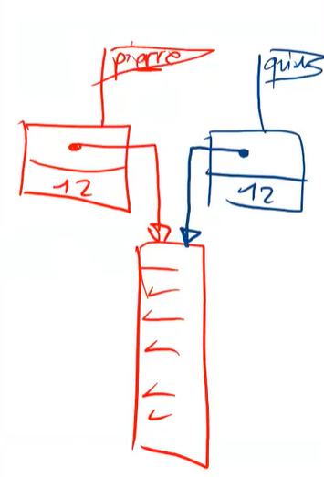
Solution copie profonde
xxxxxxxxxxvoid copie(const Personne* a_copier, Personne* clone){ // ne surtout pas faire clone.nom = a_copier.nom strncpy(clone->nom, a_copier->nom, MAX_NOM);clone->age = a_copier->age;}
Tout ces problèmes auraient été évités si on avait utilisé
xxxxxxxxxxtypedef struct { char nom[MAX_NOM+1]; int age;} Personne;W9- Pointeurs et tableaux :
Quel est la différence entre un tableaux int tab[N] et un pointeur int* ptr ?
On peux considérer qu'un tableau "est" un pointeur constant sur une zone alloué statiquement (lors de la déclaration du tableau)
Syntaxe similaire pour accéder au n-ème élément
tab[1]vsptr[1]int**ouint*[]sont très différents deint[N][N](int[][]n'existe pas il faut toujours préciser la taille)int**:n'est pas continu en mémoire
n'est pas alloué au départ
les lignes n'ont pas le même nombre d'éléments Contrairement à
int[N][N]
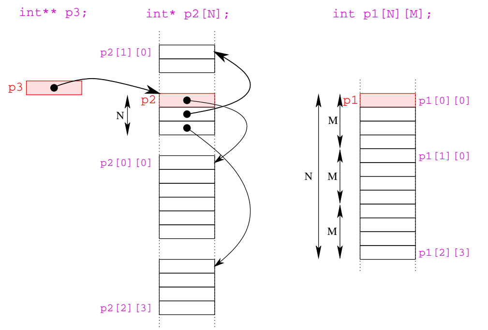
xxxxxxxxxx// ...double p1[N][M];double* p2[N];double** p3;p3 = calloc(N, sizeof(double*)); // usual checks...for (size_t i = 0; i < N; ++i) { p2[i] = calloc(M, sizeof(double)); // ... p3[i] = calloc(M, sizeof(double)); }
printf("&(p2[1][2]) - p2 = %u doubles\n",((unsigned int) &(p2[1][2]) - (unsigned int) p2) / sizeof(double));// la distance en nombre de doubles entre p2 et p2[1][2]// résultat : &(p2[1][2]) - p2 = 151032928 doublesexplication :
p2[1]a été alloué dynamiquement , doncp2[1][2]se trouve dans la file d'ou la grande distance entre les deux : 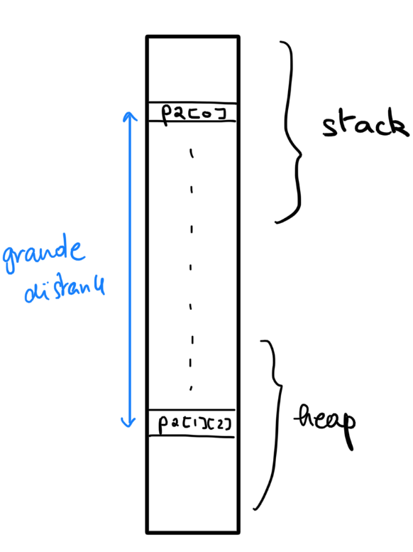
Arithmetique de pointeurs
xxxxxxxxxxchar* s; char* p; char lu;...p = s;while (lu = *p++) { ... lu ... }// pourquoi ne pas utiliser *p au lieu de lu { ... *p ... }`// parceque *p contients l'élement APRES increment donc ce n'est pas la même // chose que lu
// *p++ veut dire *(p++)// 1. p++ va donner p // 2. *(p++) va donner la valeur *p , // lu va contenir *p // 3. on incremente pMise en garde sur sizeof
xxxxxxxxxxint tab[N];... sizeof(tab)/sizeof(tab[0]) ... // donne N, mais ATTENTION !!⚠️
xxxxxxxxxxvoid f(int t[N]) {... sizeof(t)/sizeof(int) // = 2 sur une architecture 64 bits (taille d'un poiteur 64 bits = 8 byte) // sizeof(t) = sizeof (int* t) = 8 : le tableau de int est traité comme un pointeur de int // sizeof(int) = 4 }Flexible array member
C'est un tableau dynamique où toute la structest continue en mémoire
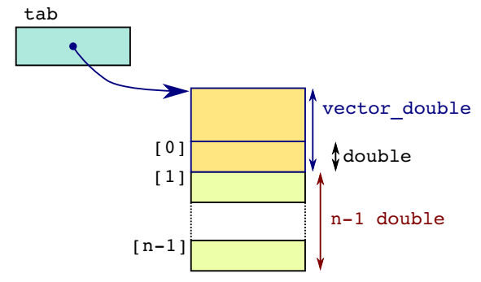
xxxxxxxxxxstruct vector_double { size_t size; // nombre d'éléments double data[1];};
const size_t N_MAX = (SIZE_MAX - sizeof(struct vector_double)) / sizeof(double) + 1;
if (nb <= N_MAX) { struct vector_double* tab = malloc(sizeof(struct vector_double) + (nb-1)*sizeof(double) ); if (tab != NULL) { tab->size = nb; }}
W10-Compilation
maina deux prototypesint main(void);etint main(int argc, char* argv[])argcest un entier comptant le nombre d'argumentsargvest un tableau de pointeurs sur des caractères :
argv[0] correspond au nom du programme.
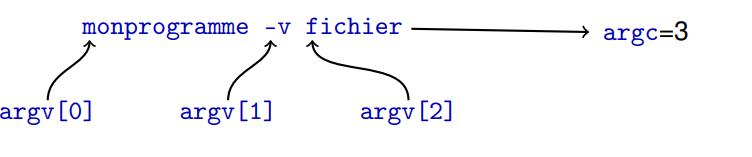
La compilation se fait en plusieurs étapes :
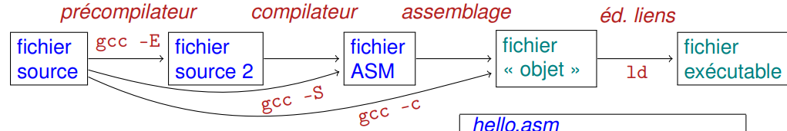
La précompilation, dont le rôle est de
substituer les macros (récriture)
choisir les lignes de codes en compilation conditionnelle
inclure les fichiers demandés (directive #include)
la compilation proprement dite, qui produit du code assembleur
l'assemblage du code assembleur en code objet
l'édition de liens entre différents codes objets pour en faire un code exécutable (un code « chargeable », en toute rigueur).
Précompilation et define
#define ne fait que réécrire le code à l'étape de la précompilation
ne fait que dire au compilateur de remplacer chaque occurrence de la chaîne TAILLE_MAX par la séquence de caractères 12.
#define peut prendre des arugments:
Exemple : #define mult(x,y) x*y
⚠️⚠️erreur classique :
xxxxxxxxxxprintf("%d\n", mult(5-5, 7-2)); // Qu'est ce qui est affiché ici ? // pas 0 mais bien -28 // Pourquoi ? LA RECRITURE // 5-5*7-2 : priorité de la multiplication = -28 Règle : Il faut toujours parenthéser les arguments des macro.
define avancé avec des les noms des arguments
On peut avoir le nom d'une variable en tant que chaine de caractères avec le #
#x va donner "x"
xxxxxxxxxx
affiche("%d", i); // ☞ printf("Ici, " "i" "=" "%d" "\n", i);// à noter que "ab""c""de" = "abcde"Si on veut transformer n'importe quelle valeur en chaine de caractères
xxxxxxxxxxSTR(SIZE) = "12"très avancé :
coupledef(double);☞ typedef struct { double x; double y; } couple_double;
Autre
void * memcpy ( void * destination, const void * source, size_t num );destination
Pointer to the destination array where the content is to be copied, type-casted to a pointer of type
void*.source
Pointer to the source of data to be copied, type-casted to a pointer of type
const void*.num
Number of bytes to copy. size_t is an unsigned integral type.
int comparator(const void* p1, const void* p2);1 if
p1should come afterp2(p1>p2if we want to sort increasingly)-1 if
p1comes beforep10 if equal